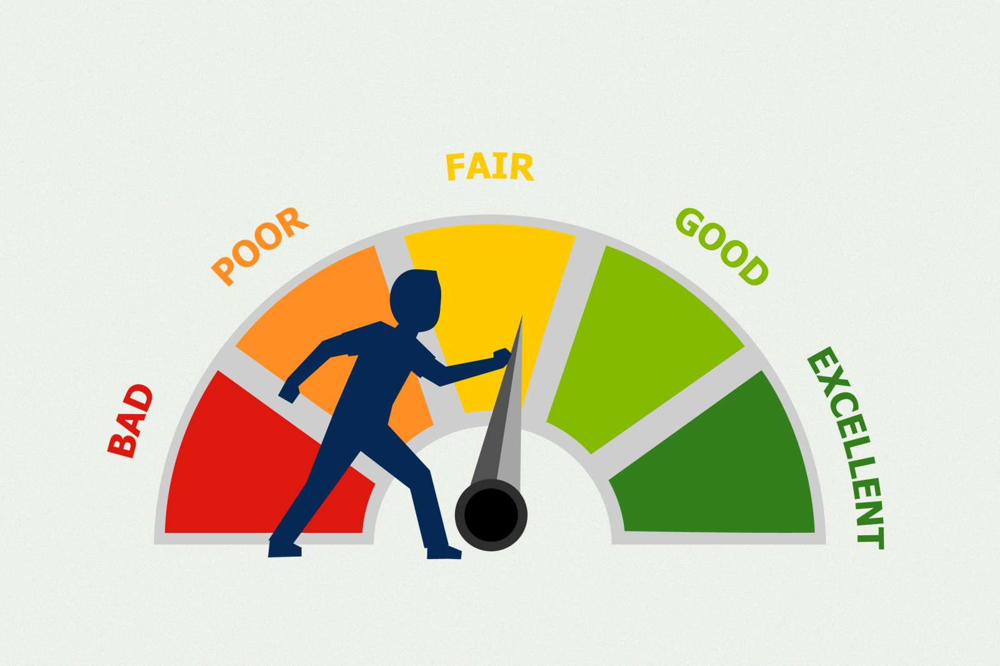
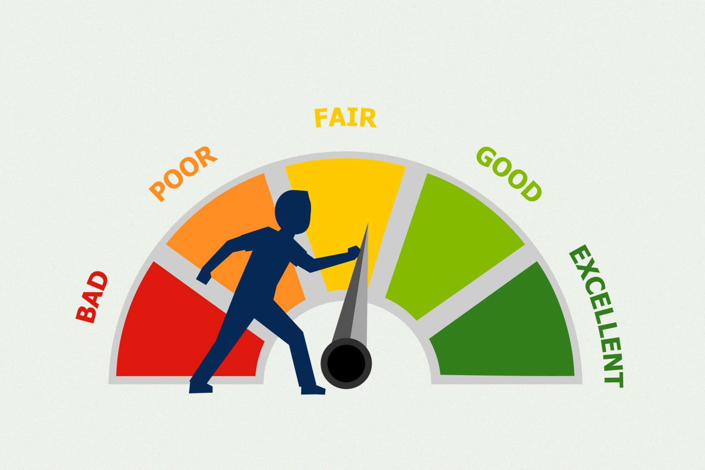

Data is the lifeblood of any company. An interactive dashboard can be a great time saver, which displays key metrics, tracks trends and delivers actionable insights. This project is an interactive sales dashboard designed for sales teams and leadership to help track sales results against targets.
 

This Scorecard helps sales managers keep control of their pipeline, provides a detailed overview of volume by probability, actual sales, backlog and how it compares to targets.
Knowing your numbers is critical for hitting targets. Knowing your market potential is vital for future planning. Sharing business insights in a visual presentation is key to successful communication and securing buy-in. This project is a glimpse of analytical storytelling.